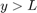
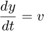
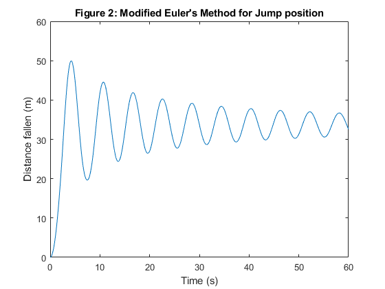

MXB103 Project Group 13: BUNGEE!
Contents
- 1 Introduction
- 2 The proposal
- The report will answer the following questions:
- 3 The model
- 3.1 Assumptions and limitations of the model
- 3.2 Parameters
- 4 The numerical method
- 4.1 Parameters
- 4.2 Solution
- 5 Analysis
- 5.1 Timing and bounces
- 5.2 Maximum speed experienced by the jumper
- 5.3 Maximum acceleration experienced by the jumper
- 5.4 Distance travelled by the jumper
- 5.5 Automated camera system
- 5.6 Water touch option
- 6 Conclusion
1 Introduction
As part of Brisbane's "New World City" transformation, the Brisbane City Council is investigating a proposal to allow bungee jumping off the Story Bridge. This report addresses several key questions about the proposal.
In Section 2 of this report, the proposal and the key questions relating to it are discussed in more detail. In Section 3, the model and its equation are discussed in greater detail including where values come as well as outlining assumptions, limitations and the values that shall be used in the model (values for a 80kg person). In Section 4, the model will be formulated and then solved using the numerical method for a second order function. And finally, in Section 5, this report will answer several questions regarding the specifics of the model and what will be expected during the jump.
2 The proposal
The proposal calls for a platform to be installed at the very top of the bridge, from which the bungee jumps will take place. This platform will be at a height H from water level and the model produced will describe how y increases as the jumper falls towards the river.
The report will answer the following questions:
- Implement a second order method to solve numerically
- Plot the jumper's position over time
- Does the model agree with 10 bounces across 60 seconds?
- What is the maximum speed and when does it occur?
- What is the maximum acceleration?
- Find how far the jumper travels within 60 seconds
- What delay should the camera at deck height be set to?
- What properties of the bungee rope could be changed to experience a 'Water Touch'?
The approach taken for these questions has been outlined in Section 1 and will use the model described below.
3 The model
The equation of motion for bungee jumping is
This equation is derived by considering the forces acting on the jumper at all times. These three forces are: 1. Gravity, 2. Drag (also called air resistance); the frictional force due to air and 3. Tension: the pull of the bungee rope when it is taut
The simplest force to model is gravity: it always acts downwards, and its value is given by , where is the mass of the jumper, and is the gravitational acceleration.
The next force we consider is drag. This force always acts in the opposite direction to motion and is always slowing the jumper. Its value is given by , where is the drag coefficient, and is the velocity of the jumper. The absolute value sign of the first factor of ensures it always acts in the opposite direction to motion.
The final force we must consider is tension. When the bungee rope is taut, it exerts a force on teh jumper proportional to how much it has been stretched (this is called Hookke's Law). This force always acts upwards, pulling the jumper back up. If we let the length of the unstretched rope be , then the tension when the rope is taut is given by , where is the elasticity of the bungee rope. In order to ensure that the tension is only measured when the rope is taut (when ), we write the function as .
Hence, the equation is
And can be simplified to:
3.1 Assumptions and limitations of the model
The model provided has several limitations that must be addressed. The model assumes optimal conditions for the jump, i.e. no wind and a tide which is at distance H from the jump platform. These factors may effect the jump in several ways which may include creating unsafe jump conditions. Large winds or high tides may mean that a jumper will reach the water level before the rope has enough time to fully decelerate the jumper. If the jumper reaches the water level at a faster speed than recommended they may sustain injury.
In addition to this, the conducted study also made several assumptions. The study was conducted on one case for an 80kg person and rope length of 25m. This study did not take into account persons of differing body weight from the specified 80kg, which may significantly affect the outcome of the jump, i.e. a person that is significantly lighter will have a much smaller jump fall distance compared with a person who is significantly heavier. Along similar vain, the body shape of the individual may have an impact on the drag experienced, as individuals with a larger surface area will create more drag than those with smaller surface area. Finally, the study also assumed a constant length and "spring constant" for the rope, this is not necessarily the most accurate solution as over time, the length of the rope $$L% will increase and as increases, the "spring constant" will decrease proportionally.
3.2 Parameters
H = 74; % Height of jump point (m) D = 31; % Deck height (m) c = 0.9; % Drag coefficient (kg/m) m = 80; % Mass of the jumper (kg) L = 25; % Length of bungee cord (m) k = 90; % Spring constant of bungee cord (N/m) g = 9.8; % Gravitational acceleration (m/s^2) C = c/m; % Scaled drag coefficient K = k/m; % Scaled spring constant
4 The numerical method
The model itself, is too complicated to solve analytically. So, numerical methods will be used to find solutions. Since the model involves two (2) unknowns, v and y, a second equation is needed that relates the two equations. This relationship is simply that the jumper's velocity (v) is the derivative of the jumper's position (y). Hence, for numerical purposes, we can think of this problem as two ODEs:

4.1 Parameters
T = 60; % Final time in simulation (s) n = 600; % Number of subintervals (you decide how many you need)
4.2 Solution
The ordinary differential equations are solved using Euler's Method.
[t_euler, y_euler, v_euler, h_euler] = euler_bungee(T, n, g, C, K, L);
The Second Order Differential equations are solved using Modified Euler's Method.
f = @(t,y,v) g - C*abs(v).*v - max(0, K.*(y - L)); [t_modeuler, y_modeuler, v_modeuler, h_modeuler] = modeuler_bungee(T, n, g, C, K, L, f);
figure(1) plot(t_euler, y_euler); xlabel('Time (s)'); ylabel('Distance fallen (m)'); axis([0 60 0 60]); title("Figure 1: Euler's Method for Jump position"); figure(2) plot(t_modeuler, y_modeuler); xlabel('Time (s)'); ylabel('Distance fallen (m)'); axis([0 60 0 60]); title("Figure 2: Modified Euler's Method for Jump position");

5 Analysis
5.1 Timing and bounces
Looking at Figure 2 we can see that across a period of 60 seconds there are 10 bounces. Thus agreeing with the proposed goal of the experience.
5.2 Maximum speed experienced by the jumper
The "thrill factor" of bungee jumping is atleast partly determined by the maximum velocity experienced by the jumper. What is the maximum speed and when does it occur?
figure(3) plot(t_modeuler,v_modeuler) title('Figure 3: Velocity of modeuler function for jump') xlabel('Time (s)') ylabel('Jumper Velocity (m/s)')
The greatest velocity is 19.99m/s at 2.6 seconds into the jump. In relation to the jump, this velocity occurs during the initial jump when the bungie cord reaches its maximum length but hasn't started stretching and slowing down the jumper.
5.3 Maximum acceleration experienced by the jumper
Another factor important for thrill-seekers is the maximum acceleration experienced. Greater acceleration means bigger thrills but too much might kill the customer. Show through mathematical methods what the jumpers maximum acceleration is and when it occurs in relation to the whole jump.
a_modeuler = TTA(v_modeuler, t_modeuler, 601); t_modeuler2 = t_modeuler; t_modeuler2(:, 1) = []; figure(4) plot(t_modeuler2,a_modeuler) title('Figure 4: Acceleration of modeuler function for jump') xlabel('Time (s)') ylabel('Jumper Acceleration (m/s^2)')
The highest absolute acceleration is 18.29 at 4.3s. This is when the jumper is coming up from the first bounce in relation to the overall jump. The claim of up to 2g is supported by the model since the absolute acceleration goes to 18.29 which is approximately 1.87g which falls within the claim while also being close enough to 2g for customers to get a thrill.
5.4 Distance travelled by the jumper
To compute the distance travelled by the jumper we must find the integral. We will use the trapezoidal method to find the definite integral.
![$$\int\limits_{0}^{60}|v|\mathrm{d}t \approx \frac{h}{2}[|v|(0) +
\sum_{i=1}^{n-1}|v|(i) + |v|(n)]$$
where
$$h = \frac{60-0}{n}$$](Group_13_Project_Script_eq18014928761163519262.png)
v_abs = abs(v_modeuler); v_dist = trapezoidal_integration(v_abs,T/n)
v_dist = 280.4992
The distance presented above is the total distance travelled between time=0s and time=60s for the jumper.
5.5 Automated camera system
Describe the question, and then answer it. In this case, you will fit an interpolating polynomial through the four points in your solution that lie either side of the camera location. Then use that polynomial to solve for when the jumper passes the camera.
int_deck = 43; int_i = first_in_tol(y_modeuler, int_deck, 1); int_array = zeros(4,1); % Check if index is above or below desired value and create set of values % accordingly if y_modeuler(int_i) >= int_deck int_array(1) = y_modeuler(int_i-2); int_array(2) = y_modeuler(int_i-1); int_array(3) = y_modeuler(int_i); int_array(4) = y_modeuler(int_i+1); int_X = t_modeuler(int_i-2):t_modeuler(2):t_modeuler(int_i+1); else int_array(1) = y_modeuler(int_i-1); int_array(2) = y_modeuler(int_i); int_array(3) = y_modeuler(int_i+1); int_array(4) = y_modeuler(int_i+2); int_X = t_modeuler(int_i-1):t_modeuler(2):t_modeuler(int_i+2); end int_diff = forward_differences(int_array); int_tol = 0.000001; int_rootfind = NaN; while isnan(int_rootfind) && int_tol < 1 int_x = int_X(1):int_tol:int_X(end); int_eval = forward_eval(int_X,int_diff,int_x); figure(5); plot(int_X,int_array,"r*"); hold on; plot(int_x,int_eval); title("Figure 5: Generating interpolating polynomial around y=43"); int_rootfind = first_in_tol(int_eval, int_deck, 0.00001); int_tol = int_tol*10; end int_x(int_rootfind) int_eval(int_rootfind)
ans =
3.3364
ans =
43.0000
5.6 Water touch option
Describe the question, and then answer it. In this case, you will re-solve the equations with different parameters for and . Experiment to find which values work best for the water touch option, but include only the best combination that you found in the submitted code.
6 Conclusion
Conclude your report by summing up your findings and making any recommendations.